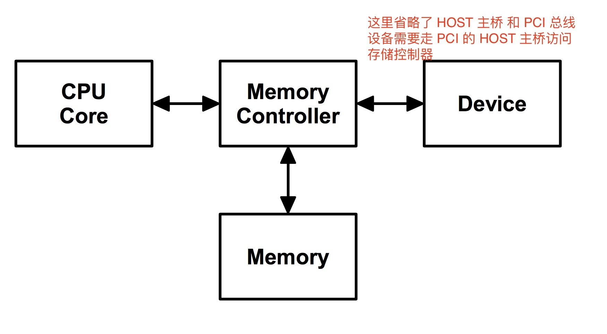
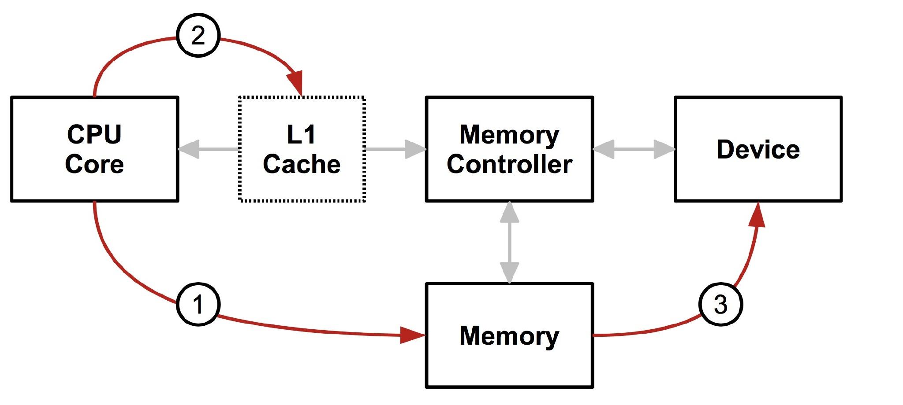
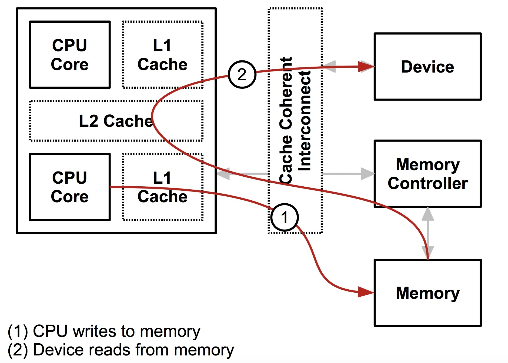
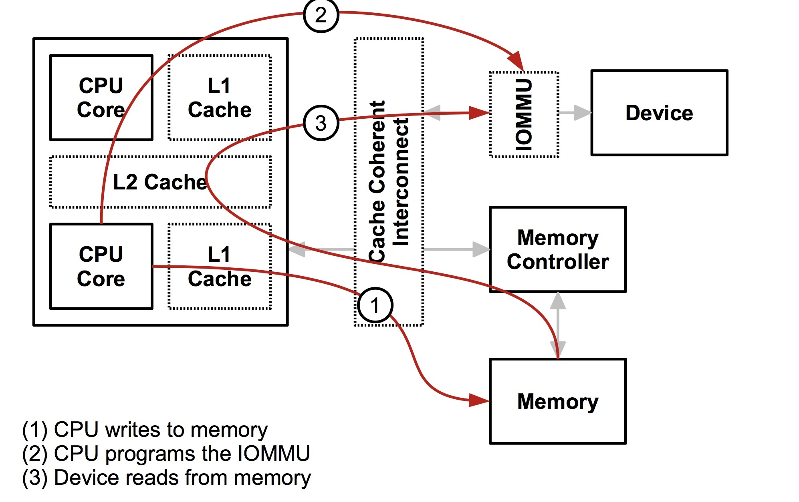
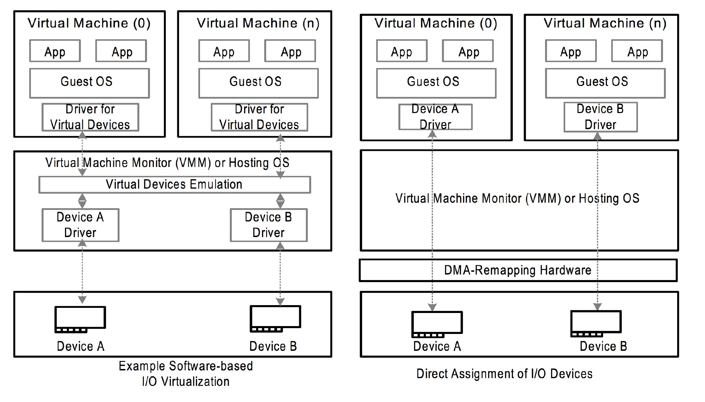
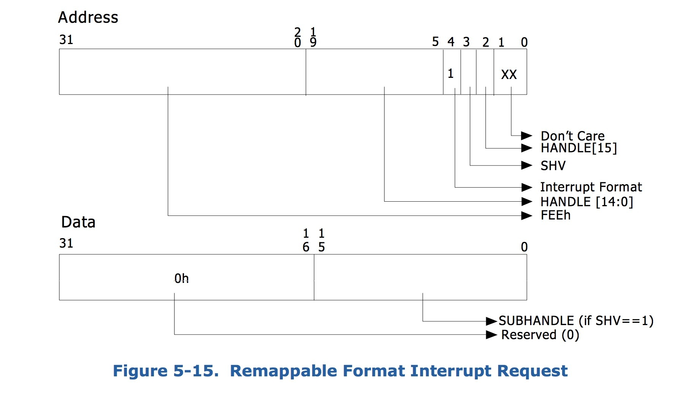

VFIO概述
VFIO
在开始之前我们先要说一个东西就是 DMA，直接让设备访问内存，可以不通过 CPU 搬运数据。

这是一个比较简单的体系结构图，设备 和 CPU 通过存储控制器访问存储器。一个简单的 case 是 CPU 向存储器写数据，然后设备从存储器读数据。这么快来一切都很正常。但是实际上 CPU 是有一层缓存的，例如下面这样。

CPU 向内存写数据，但是先要清空到不一致的缓存，然后设备再去读数据，不然设备读到的数据和 CPU 实际的数据会不一致（因为缓存里的数据可能和存储器的不一致），而且实际上缓存也不只是一层，所以需要一个中间层来保证 从 CPU 的角度和从设备的角度内存都是一致的，所以就有了下面这个结构。

CPU 和 设备都会走缓存验证一遍以后，再落到存储器上，这样带上缓存以后大家的一致性都是一样的了。所以从设备的角度，设备也拥有了缓存，实际上这个和 IOMMU 关系不是很大，接下来设备其实也可以和 CPU 一样有一层 MMU，也就是地址到存储器物理地址的转换。注意，这里我用了地址，因为对 CPU 来说是虚拟地址，但是对设备来说是一个总线域的地址。这里要明确区分一下，一个是总线地址，是从设备的角度来看的，一个是 CPU 的虚拟地址，这是从 CPU 角度来看的，两个是不同的东西。将总线域地址转换成存储器物理地址的设备就叫 IOMMU。

如果没有 IOMMU，DMA 也能照常工作，IOMMU 的主要作用就是保护功能，防止使用 DMA 的设备访问任意存储器的物理地址。
IOMMU 在不同架构上名字不太一样，AMD 叫 AMD-Vi，最开始针对的设备只是显卡，Intel 叫 VT-d，arm 叫 SMMU，具体对应的手册也不太一样，但是主要解决的问题是一致的。在 VTd 中，dmar (DMA remapping) 就是那个 IOMMU 设备，通过中断的方式实现类似 page fault 一样的内存分配行为。DMA 传输是由 CPU 发起的：CPU 会告诉 DMA 控制器，帮忙将 xxx 地方的数据搬到 xxx 地方。CPU 发完指令之后，就当甩手掌柜了。IOMMU 有点像 MMU 是一个将设备地址翻译到内存地址的页表体系，也会有对应的页表，这个东西在虚拟化中也非常有用，可以将原本有软件模拟的设备，用直接的硬件替代，而原本的隔离通过 IOMMU 来完成。如下图所示，原本需要通过软件模拟的驱动设备可以通过 IOMMU 以__安全__的方式来直接把硬件设备分配个用户态的 Guest OS。

理论上讲没有 IOMMU 实际上是可以工作的，但是硬件的角度，设备就拥有了整个存储器的全局视图，这是无论如何都非常不合理的事情，不应该让设备拥有访问任意物理内存的能力。
这里要提的另外一个功能就是对中断的隔离，类似于下面的通过在中断请求中添加标识来重定向中断到对应的中断回调上。

VFIO 的作用就是通过 IOMMU 以安全的方式来将设备的访问直接暴露到用户空间，而不用专门完成某个驱动等待合并到上游或者使用之前的对 IOMMU 没有感知的 UIO 的框架。通过 VFIO 向用户态开放 IOMMU 的功能，编写用户态的驱动。
对于 IOMMU 来说，隔离的级别不一定是单个设备，比如一个后面有几个设备的 PCI 桥，从 PCI 桥角度来说，都是来自 PCI 桥的总线事务。所以 IOMMU 有一个 iommu_group的概念，代表一组与其他设备隔离的设备的集合。
IOMMU 根据手册上讲还有一个域的概念，可以简单理解为一段物理地址的抽象。
在 iommu_group 的层级上，VFIO 封装了一层 container class，这个的作用对应于希望能够在不同的iommu_group 之间共享 TLB 和 page tables，这个就是一个集合的概念，跟容器的那个概念没啥关系，一个集合总归要有个名字。通过把 host 的 device 和 driver 解绑，然后绑定到 VFIO 的 driver 上，就会有个/dev/vfio/$GROUP/ 出现，然后这个 $GROUP代表的就是这个 device 的 iommu_group号，如果要使用 VFIO 就要把这个 group 下的所有 device 都解绑才可以。
通过打开/dev/vfio/vfio就能创建一个 VFIO 的 container，然后再打开/dev/vfio/$GROUP用VFIO_GROUP_SET_CONTAINER ioctl 把文件描述传进去，就把 group 加进去了，如果支持多个 group 共享页表等结构，还可以把相应的 group 也加进去。（再强调一遍这个页表是总线地址到存储器物理地址，IOMMU 管理的那个页表）。
下面举个官方的栗子，获取 PCI 设备 0000:06:0d.0 的 group_id （PCI 命名的规则是 domain:bus:slot.func）
$ readlink /sys/bus/pci/devices/0000:06:0d.0/iommu_group
../../../../kernel/iommu_groups/26解绑 PCI 设备，然后创建一个 container id
$ lspci -n -s 0000:06:0d.0
06:0d.0 0401: 1102:0002 (rev 08)
# echo 0000:06:0d.0 > /sys/bus/pci/devices/0000:06:0d.0/driver/unbind
# echo 1102 0002 > /sys/bus/pci/drivers/vfio-pci/new_id然后寻找其他同属于一个 group 的设备
$ ls -l /sys/bus/pci/devices/0000:06:0d.0/iommu_group/devices
total 0
lrwxrwxrwx. 1 root root 0 Apr 23 16:13 0000:00:1e.0 ->
../../../../devices/pci0000:00/0000:00:1e.0
lrwxrwxrwx. 1 root root 0 Apr 23 16:13 0000:06:0d.0 ->
../../../../devices/pci0000:00/0000:00:1e.0/0000:06:0d.0
lrwxrwxrwx. 1 root root 0 Apr 23 16:13 0000:06:0d.1 ->
../../../../devices/pci0000:00/0000:00:1e.0/0000:06:0d.1PCI 桥 0000:00:1e.0 后面挂了两个设备，一个是刚才加进去的 0000:06:0d.0，还有一个是 0000:06:0d.1，通过上面的步奏加进去就可以。
最后一步是让用户有权限使用这个 group。
# chown user:user /dev/vfio/26下面就是一个样例，从用户态使用 VFIO，整个的使用方式是通过 ioctl来获取中断相关信息，以及注册中断处理函数，然后也是通过 ioctl来获取region信息，然后调用相应的mmap函数，让 CPU 可以访问内存。
int container, group, device, i;
struct vfio_group_status group_status =
{ .argsz = sizeof(group_status) };
struct vfio_iommu_type1_info iommu_info = { .argsz = sizeof(iommu_info) };
struct vfio_iommu_type1_dma_map dma_map = { .argsz = sizeof(dma_map) };
struct vfio_device_info device_info = { .argsz = sizeof(device_info) };
/* Create a new container */
container = open("/dev/vfio/vfio", O_RDWR);
if (ioctl(container, VFIO_GET_API_VERSION) != VFIO_API_VERSION)
/* Unknown API version */
if (!ioctl(container, VFIO_CHECK_EXTENSION, VFIO_TYPE1_IOMMU))
/* Doesn't support the IOMMU driver we want. */
/* Open the group */
group = open("/dev/vfio/26", O_RDWR);
/* Test the group is viable and available */
ioctl(group, VFIO_GROUP_GET_STATUS, &group_status);
if (!(group_status.flags & VFIO_GROUP_FLAGS_VIABLE))
/* Group is not viable (ie, not all devices bound for vfio) */
/* Add the group to the container */
ioctl(group, VFIO_GROUP_SET_CONTAINER, &container);
/* Enable the IOMMU model we want */
ioctl(container, VFIO_SET_IOMMU, VFIO_TYPE1_IOMMU);
/* Get addition IOMMU info */
ioctl(container, VFIO_IOMMU_GET_INFO, &iommu_info);
/* Allocate some space and setup a DMA mapping */
dma_map.vaddr = mmap(0, 1024 * 1024, PROT_READ | PROT_WRITE,
MAP_PRIVATE | MAP_ANONYMOUS, 0, 0);
dma_map.size = 1024 * 1024;
dma_map.iova = 0; /* 1MB starting at 0x0 from device view */
dma_map.flags = VFIO_DMA_MAP_FLAG_READ | VFIO_DMA_MAP_FLAG_WRITE;
ioctl(container, VFIO_IOMMU_MAP_DMA, &dma_map);
/* Get a file descriptor for the device */
device = ioctl(group, VFIO_GROUP_GET_DEVICE_FD, "0000:06:0d.0");
/* Test and setup the device */
ioctl(device, VFIO_DEVICE_GET_INFO, &device_info);
for (i = 0; i < device_info.num_regions; i++) {
struct vfio_region_info reg = { .argsz = sizeof(reg) };
reg.index = i;
ioctl(device, VFIO_DEVICE_GET_REGION_INFO, ®);
/* Setup mappings... read/write offsets, mmaps
* For PCI devices, config space is a region */
}
for (i = 0; i < device_info.num_irqs; i++) {
struct vfio_irq_info irq = { .argsz = sizeof(irq) };
irq.index = i;
ioctl(device, VFIO_DEVICE_GET_IRQ_INFO, &irq);
/* Setup IRQs... eventfds, VFIO_DEVICE_SET_IRQS */
}
/* Gratuitous device reset and go... */
ioctl(device, VFIO_DEVICE_RESET);在include/linux/vfio.h里面有完整的 API，这里就简单略过。
在理解了一些基本原理和使用方式之后再来看 VFIO 的代码应该叫就比较容易理解了。
首先是作为 PCI 设备的 probe。主要是通过 vfio_iommu_group_get 分配 iommu_group，然后调用vfio_add_group_dev初始化设备回调接口vfio_pci_ops，而remove就是反过来把对应的结构释放掉就可以。然后再看注册的回调函数结构体。
static const struct vfio_device_ops vfio_pci_ops = {
.name = "vfio-pci",
.open = vfio_pci_open,
.release = vfio_pci_release,
.ioctl = vfio_pci_ioctl,
.read = vfio_pci_read,
.write = vfio_pci_write,
.mmap = vfio_pci_mmap,
.request = vfio_pci_request,
};这里分析几个关键的函数，他们会通过file_operations vfio_fops被间接的调用。
首先是 mmap，就是在调用vfio_pci_mmap的时候最终调用remap_pfn_range(vma, vma->vm_start, vma->vm_pgoff, req_len, vma->vm_page_prot); 来将物理内存映射到用户态空间，这就是上面的栗子中 mmap 系统调用的入口，而具体要映射的物理内存是通过一系列pci_resource_xxx宏从 PCI bar 空间读出来的配置。
然后是 ioctl 接口，这个接口比较丰富，也简单的看一下。比如 VFIO_DEVICE_SET_IRQS会通过使用用户态传进来的结构体，调用vfio_pci_set_irqs_ioctl注册中断处理函数。而通过vfio_ioctl_set_iommu会设置 container 的 iommu_group 以及对应的 driver。read/write接口都是用于修改 PCI 配置信息的。
简单的来说，VFIO 的主要工作是把设备通过 IOMMU 映射的 DMA 物理内存地址映射到用户态中，让用户态程序可以自行操纵设备的传输，并且可以保证一定程度的安全，另外可以自行注册中断处理函数，从而在用户态实现设备的驱动程序，通过这样的框架，可以在 DPDK 中充分发挥用户态协议栈的威力。
参考链接
《PCI Express 体系结构导读》王齐著